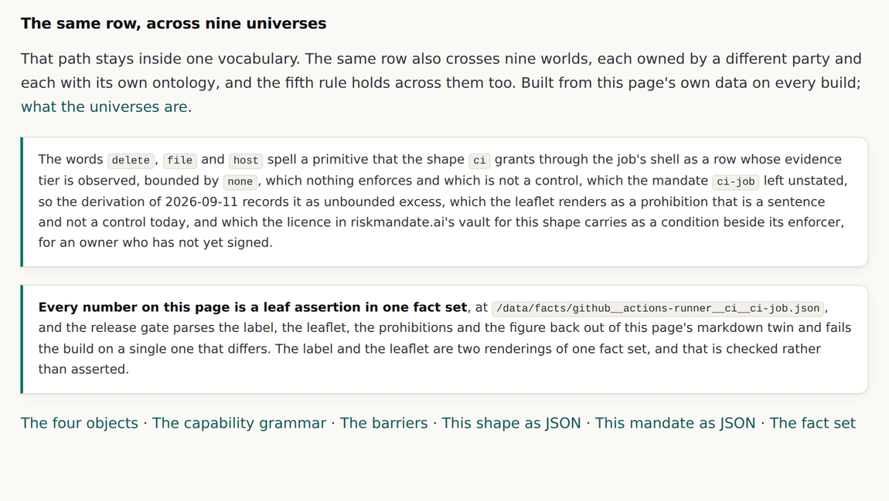

v0.4.2: The fact diff was named as a blocker on four consecutive days, and it reads the published page
Every projection renders the same fact set with an empty diff. That rule had no mechanism behind it for a month. The mechanism parses the label, the leaflet, the prohibitions and the figure back out of the page that shipped, because a diff that trusts the generator checks nothing.
v0.4.2 tag, so it shows the site as it stood at that release and not as it stands today. Read on to v0.4.3, or back to v0.4.1.A rule with no mechanism behind it
Every projection renders the same fact set, and the diff must be empty. That rule has been in force across this estate since August. It is the thing that makes a document rendered for a decision maker and a document rendered for an engineer two views of one set of facts rather than two documents that happen to be about the same agent.
It was named as the blocker on four consecutive days in September, because the diff did not exist. A promise that cannot be checked is a promise that may be described and may not be printed, and the store's multi format offer sat behind exactly that line.
What the diff is over
The specification was precise and it is worth restating, because it is the thing that makes the check cheap. The facts are the leaf assertions. The classes are how a reader groups them, and they differ by altitude, which is correct rather than a defect.
So a fact set is written for every stored delta: what the shape grants, at what barrier, with what undo class and what evidence tier; the stance the mandate takes on all twenty three primitives; and the excess, unbounded excess, aligned set and shortfall that follow. It pins the same inputs the delta pins, and no field in it is writable by a person.
Why it reads the published page
This is the decision that makes the check worth having. The gate does not compare the generator's intermediate values. It opens each example's published markdown twin, parses the label, the leaflet, the prohibitions and the figure back out of the rendered text, and compares each leaf assertion with the fact set, in both directions.
$ node admin/build/validate.js
validate: 4 error(s)
x examples/claude-code-cli-confirmations-disabled/index.md: the label says
Excess is "11", the fact set says "12"
x examples/claude-code-cli-confirmations-disabled/index.md: the leaflet says
authenticate-as.credential.signing is at barrier "boundary", the fact set
says "none"
x examples/chatgpt-web-no-connectors/index.md: the leaflet says the mandate's
stance on read.file.project is "wanted", the fact set says "refused"
That is the check being tested rather than trusted: a label number, a leaflet barrier and a fact set stance were each corrupted on purpose, and the gate named all three before the release was committed.
The same row, across nine universes
The other half of the release is smaller and it closes a loop opened two versions earlier. Every example page already ended with one capability followed through the model as a sentence, which is the fifth graph rule as an acceptance test. That path stays inside one vocabulary.

The two sentences are doing different work. The first says the edges inside the model read correctly. The second says the edges between the model and eight other worlds do, including two this site does not own.
The fact sets · An example · v0.4.2's own release record